농업기계산업기사 (2003-05-25 기출문제)
1과목: 농업기계공작법
1. 풀리나 기어와 같이 중앙에 구멍이 있어 센터로 지지하여 가공할수 없을 때 사용되는 선반의 부속장치로 가장 적합한 것은?
- 면판
- 돌리게
- 척
- 맨드릴
(정답률: 54%)

2. WA 60 L 8 V 라는 연삭숫돌 표시에서 60 은 무엇을 의미하는가?
- 결합도
- 입도
- 결합제
- 지름
(정답률: 83%)
3. 지름 12㎜ 드릴로 가공하는 구멍의 깊이가 60㎜이고 절삭속도가 18m/min, 피드를 0.2㎜로 할 때, 드릴 끝 원추의 높이를 드릴지름의 1/3로 하면 절삭시간은 약 몇 분(min)인가?
- 0.38
- 0.45
- 0.67
- 0.75
(정답률: 32%)
4. 밀링작업에서 하향절삭의 장점이 아닌 것은?
- 동력 소비가 적다.
- 가공면이 깨끗하다.
- 절삭날의 마모가 적다.
- 절삭 칩이 잘 빠져나와 절삭을 방해하지 않는다.
(정답률: 80%)
5. 기계가공에 의한 내부응력과 용접의 잔류응력을 제거하기 위한 열처리로 가장 적합한 것은?
- 불림
- 풀림
- 뜨임
- 담금질
(정답률: 82%)
6. 재료를 열간 또는 냉간 가공하기 위하여 회전하는 롤러사이에 통과시켜 판, 봉, 형재를 만드는 소성 가공은?
- 단조 가공
- 압축 가공
- 전조 가공
- 압연 가공
(정답률: 81%)
7. 공작물의 표면을 극히 소량씩 깎아내어 정확한 평면으로 다듬는 작업을 무엇이라 하는가?
- 스크레이퍼 작업
- 핸드 탭 작업
- 핸드 리머 작업
- 다이스 작업
(정답률: 92%)
8. 다음 줄작업에 관한 설명 중 틀린 것은?
- 손의 힘은 물론 몸의 체중을 이용하여 작업한다.
- 줄은 황목, 중목, 세목의 순서로 바꾸어 작업한다.
- 표면을 매끈하게 다듬기 위해 윤활 기름을 치면서 작업한다.
- 직진법보다 사진법이 가공물을 깎아 내는데 유리하다
(정답률: 77%)
9. 나사의 유효지름을 측정할 수 없는 것은?
- 삼침법
- 나사 마이크로 미터
- 옵티미터
- 표준 나사 게이지
(정답률: 79%)
10. 판금 제품의 모서리부분을 둥글게 말아서 판재의 강도를 높이고 외관 접촉을 부드럽게 하는 작업은?
- 비딩(beading)
- 컬링(curling)
- 시밍(seaming)
- 벌징(bulging)
(정답률: 78%)
11. 재료를 잡아 당겨 다이와 맨드릴(심봉)에 통과시켜 가공하는 소성가공법은?
- 인발
- 압출
- 전조
- 압연
(정답률: 67%)
12. 조립용 공구로 사용되는 탭(tap)의 용도는?
- 숫나사를 깎는 공구
- 암나사를 깎는 공구
- 테이퍼를 내는 공구
- 다듬질에 쓰는 공구
(정답률: 90%)
13. 목형에 구배를 두는 가장 중요한 이유는?
- 주형으로부터 목형을 쉽게 뽑기 위하여
- 목형의 강도를 보강하기 위하여
- 목형의 변형을 방지하기 위하여
- 목형의 미관을 좋게하기 위하여
(정답률: 87%)
14. 다음 중 일반적인 밀링작업에서의 분할법으로 사용하지 않는 방법은?
- 직접 분할법
- 복식 분할법
- 단식 분할법
- 차동 분할법
(정답률: 54%)
15. 다음 정밀입자 가공법 중 블록 게이지의 최종 다듬질 가공에 가장 적합한 것은?
- 래핑
- 액체 호닝
- 숏 피닝
- 슈퍼피니싱
(정답률: 56%)
16. 배럴가공에서 미디어(media)의 가공작용 설명으로 틀린 것은?
- 표면의 치수 정밀도와는 무관하다.
- 녹이나 스케일을 제거한다.
- 거스러미를 제거한다.
- 표면의 광택을 낸다.
(정답률: 81%)
17. 다음 중 거스러미 제거용 공구로 가장 적합한 것은?
- 리머(reamer)
- 스크라이버(scriber)
- 정반(surface plate)
- 서피스 게이지(surface gauge)
(정답률: 64%)
18. 구조물상에서 금속의 미소변형을 측정하기 위해 전기저항변화를 이용하는 게이지는?
- 전기 마이크로메터
- 스트레인 게이지
- 옵티컬 컴퍼레이터
- 스냅 게이지
(정답률: 60%)
19. 다음 측정기 중 비교 측정기인 것은?
- 눈금자
- 다이얼 게이지
- 마이크로미터
- 버니어캘리퍼스
(정답률: 82%)
20. 연삭숫돌에서 눈막힘(loading)의 원인이 아닌 것은?
- 숫돌입자가 너무 잘다.
- 조직이 너무 치밀하다.
- 연삭깊이가 너무 크다.
- 숫돌의 주속도가 너무 크다.
(정답률: 70%)
2과목: 농업기계요소
21. 원동차의 지름을 D1, 종동차의 지름을 D2 , 축간거리를 C라 할 때, 바로걸기의 벨트길이 L을 구하는 식은?
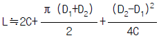
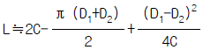
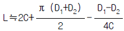
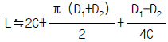
(정답률: 65%)
22. 표준 스퍼 기어에서 모듈이 m=4 이고, 잇수 Z=28 일 때, 기어의 바깥지름 Do는 몇 mm 인가?
- 60
- 112
- 120
- 240
(정답률: 39%)
23. 축에는 키홈을 가공하지 않고 보스에 만 1/100 의 기울기를 가지는 키홈을 만들어 때려 박는 키는?
- 반달 키
- 납작 키
- 안장 키
- 묻힘 키
(정답률: 83%)
24. 베어링 하중 400kgf을 받고 회전하는 축의 저널베어링에서 축의 원주속도가 0.75m/s일 때 마찰로 인한 손실동력은 몇 마력(PS)인가? (단, 마찰계수는 μ= 0.03 이다.)
- 0.12
- 0.25
- 1.2
- 2.5
(정답률: 38%)
25. 목두께가 15mm이고, 용접길이가 35cm인 맞대기 용접부에 5500kgf의 인장하중이 작용할 때, 인장응력은 몇 kgf/mm2인가?
- 0.64
- 0.79
- 0.92
- 1.⑤
(정답률: 23%)
26. 베어링 하중 P를 받으며 Nrpm 으로 회전하는 구름 베어링의 정격회전수명Ln(106 회전단위)을 정격시간수명(Lh)으로 나타낸 것은?
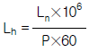
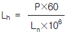
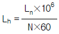
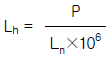
(정답률: 54%)
27. 마찰차에 대한 일반적인 설명으로 옳은 것은?
- 속비가 정확하지 못하다.
- 양차의 회전방향은 항상 동일하다.
- 주어진 범위에서 연속 직진적으로 변속시킬 수 없다.
- 확실한 회전운동의 전달 및 대마력 전동에 적합하다.
(정답률: 41%)
28. 원판 브레이크에서 마찰면의 평균 지름 200mm, 제동압력 500kgf 일 때 회전속도가 1000rpm 이었다면 제동 마력은 약 몇 마력(PS)인가? (단, 마찰계수는 μ= 0.2 이다.)
- 3.5
- 7
- 14
- 28
(정답률: 58%)
29. 평벨트 풀리의 지름이 각각 200mm, 600mm이고 직물벨트를 이용하여 2 PS를 전달하려고 한다. 작은 풀리의 회전수가 900rpm 일 때 벨트가 받는 유효장력은 몇 kgf 이상이어야 하는가?
- 5.3
- 8
- 16
- 32
(정답률: 43%)
30. 그림에서 a는 20㎝, 드럼의 지름 D는 φ50㎝, 레버의 길이는 L=100㎝, F= 30㎏f 인 단동식 밴드 브레이크에 의하여 300rpm으로 회전하는 10 PS의 동력을 제동하려할 때, 브레이크 제동력 Q 은 약 몇 ㎏f 인가?
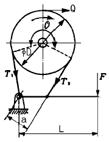
- 66
- 96
- 108
- 142
(정답률: 68%)
31. 원통기어의 피치원 반지름을 무한대로 한 것과 같은 의미의 기어인 것은?
- 랙
- 스퍼기어
- 헬리컬기어
- 베벨기어
(정답률: 57%)
32. M20×2인 2줄 나사의 리드는 몇 ㎜인가?
- 2
- 4
- 20
- 40
(정답률: 68%)
33. 농업기계 재료의 일반적인 안전율을 나타낸 식으로 가장 적합한 것은?
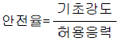
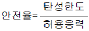
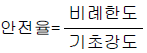
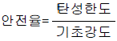
(정답률: 87%)
34. 단위 체적마다에 저축되는 탄성 에너지가 크고 경량이며 형상이 간단하고, 좁은곳에 설치가능하며 스프링 특성과 이론치가 잘 일치하는 특징을 갖는 스프링은?
- 스냅 스프링
- 벌류트 스프링
- 접시 스프링
- 토션 바 스프링
(정답률: 77%)
35. 양쪽 기울기 코터이음에서 자립상태를 유지하는 조건으로 다음 중 가장 적합한 것은? (단, α는 구배, ρ는 마찰각이다.)
- α ≦ 2ρ
- α ≧ 2ρ
- α ≦ ρ
- α ≧ ρ
(정답률: 70%)
36. 볼베어링의 기본 부하용량을 C, 베어링하중을 P라 할 때, 베어링 하중이 1/2배로 되면 정격수명은 몇배로 되는가?
- 1/2배
- 2배
- 4배
- 8배
(정답률: 65%)
37. 한변의 길이가 20㎜인 정사각형 단면의 재료에 압축하중이 작용하고 있다. 이 때의 압축응력이 10㎏f/㎜2 이라고 하면 압축하중은 몇 kgf 인가?
- 200
- 400
- 2000
- 4000
(정답률: 44%)
38. 안지름 220㎜인 강관의 유량이 40ℓ /sec이다. 관속을 흐르는 유체의 평균속도는 몇 m/sec 인가?
- 0.15
- 1.⑤
- 1.5
- 10.5
(정답률: 40%)
39. 기계 부품의 단면이 급격히 변하는 부분에 국부적으로 특별히 큰 응력이 발생하는 현상을 무엇이라고 하는가?
- 크리이프
- 피로
- 응력집중
- 코킹
(정답률: 62%)
40. 베어링 하중이 2000kgf이고, 저널베어링의 지름은 70mm, 길이가 140mm일 때 평균 베어링 압력은 몇 kgf/cm2 인가?
- 10.2
- 20.4
- 30.6
- 40.8
(정답률: 40%)
3과목: 농업기계학
41. 미스트(mist)살포법의 특징으로 잘못 설명된 항은?
- 구조가 간단하여 소형 경량이다.
- 분무 입자가 작으므로 부착성이 좋다.
- 농후 약액을 사용하므로 노력이 적게 든다.
- 풍속이나 풍향에 대한 영향을 받지 않는다.
(정답률: 86%)
42. 입자가 작고 불규칙한 형상을 한 채소종자를 점파하고자 한다. 다음 중 가장 적합한 종자 배출장치는?
- 구멍롤러식
- 공기식
- 경사원판식
- 피커휠식
(정답률: 74%)
43. 단동 3연식 플런저 펌프의 플런저 지름 3㎝, 행정거리 3.2㎝, 크랭크축 회전속도 700rpm일 때 이론 배출량은 약 몇 ℓ /min 인가? (단, 펌프의 체적 효율은 95% 이다.)
- 45
- 55
- 451
- 550
(정답률: 31%)
44. 다음 선별원리 중 곡물 선별기에 사용되지 않는 것은?
- 색채선별
- 자력선별
- 비중선별
- 당도선별
(정답률: 69%)
45. 농업양수기 구조 중 케이싱에서 나온 물을 필요한 장소로 운송하는 파이프로, 입구에서 슬루스 밸브(sluice valve)로서 양수량을 조절하는 것은?
- 흡입관(suction pipe)
- 푸트밸브(foot valve)
- 송출관(delivery pipe)
- 케이싱(casing)
(정답률: 71%)
46. 농산물을 온도와 습도가 일정한 공기 중에 장기간 놓아두면 일정한 함수율에 도달한다. 이 때의 함수율은?
- 평형함수율
- 절대함수율
- 건량기준함수율
- 평균함수율
(정답률: 67%)
47. 강력한 압력이 필요한 높은 수목의 방제작업에 사용되는 분무기 노즐로 다음 중 가장 적합한 것은?
- 볼트형
- 원판형
- 캡형
- 철포형
(정답률: 80%)
48. 방제시 농약액의 입자가 작았을 때, 나타나는 결과 설명으로 틀린 것은?
- 피복면적비가 증가한다
- 바람에 의해 쉽게 증발· 비산된다
- 부착률이 떨어진다
- 작업자나 주위환경을 오염시킬 위험성이 높다
(정답률: 60%)
49. 다음 중 종자판식 점파기에서 녹 아우트(Knock-out)가 하는 주요작용인 것은?
- 종자의 크기를 선별한다.
- 홈 안의 종자를 종자관으로 떨어뜨린다.
- 홈 위의 여분의 종자를 제거한다.
- 종자의 흩어짐을 방지한다.
(정답률: 83%)
50. 다음 중 일반적인 로타리 경운기의 경운날로 사용되지 않는 날은?
- 작두형날
- 톱니형날
- L자형날
- 보통형날
(정답률: 82%)
51. 일반적인 플라우(plow)의 크기는 무엇으로 나타내는가?
- 이체의 중량
- 보습날의 나비
- 이체의 두께
- 몰드 보드의 수
(정답률: 61%)
52. 토양의 수분함량을 측정키 위해 토양의 표본을 채취하여 분석한 결과 토양을 건조하기 전에 토양 전체의 무게가 100g, 토양을 건조한 후의 무게가 78g이었다. 토양의 수분함량은 건량기준으로 몇 %인가?
- 24.3
- 28.2
- 31.2
- 35.4
(정답률: 56%)
53. 원심펌프에서 양수작업시에 푸트 밸브는 어느 상태인가?
- 완전히 열려 있는 것이 정상이다.
- 개폐 작용을 반복하는 것이 정상이다.
- 반쯤 열려 있는 것이 정상이다.
- 약 70% 정도 열려 있는 것이 정상이다.
(정답률: 79%)
54. 다음의 농산물 물성 중 일반 농가에서 과일의 품질을 평가하는데 많이 사용하는 것은?
- 기계적 특성
- 광학적 특성
- 전기적 특성
- 열적 특성
(정답률: 87%)
55. 다음의 선별방식 중 형상선별에 가장 적합한 것은?
- 드럼식
- 스프링식
- 타음식
- 전자식(로드 셀)
(정답률: 57%)
56. 다음 중 벼를 수확할 때 콤바인(combine)이 수행하는 기능이 아닌 것은?
- 예취
- 결속
- 탈곡
- 선별
(정답률: 74%)
57. 농경지의 바깥쪽에서 시작하여 바깥쪽으로 제치면서 연속적으로 갈아 들어가는 경운 방법은?
- 내반경법
- 외반경법
- 외회경법
- 내회경법
(정답률: 60%)
58. 원판 플라우에 부착되어 작업시 흙을 털어내면서 항상 원판을 깨끗하게 하는 장치는?
- 브러시(Brush)
- 스크레이퍼(Scraper)
- 코울터(Coulter)
- 지측판(land side)
(정답률: 69%)
59. 격자형 육묘상자에서 육모한 후 이식할 때는 틀에서 모를 밀어내는 방식으로 이식하는 육모방법은?
- 줄모
- 매트모
- 틀모
- 흙블록모
(정답률: 78%)
60. 탈곡기의 선별부 구성품 중 곡립을 선별함과 동시에 탈곡작용을 돕는 작용을 하는 것은?
- 풍구
- 배진판
- 체
- 수망
(정답률: 56%)
4과목: 농업동력학
61. 트랙터 경운작업시 한쪽 바퀴의 슬립이 심할 때 사용해야 되는 것은?
- 위치제어 레버
- 독립 브레이크 페달
- 저항제어 레버
- 차동 잠금 페달
(정답률: 75%)
62. 혼합기를 만드는 공기량을 가감하는 것은?
- 스로틀 밸브(throttle valve)
- 벤츄리관(venturi tube)
- 니들 밸브(niddle valve)
- 쵸크 밸브(choke valve)
(정답률: 65%)
63. 트랙터의 발전기에서 나오는 전압을 충전에 필요한 일정한 전압으로 유지시켜 주는 장치는 무엇인가?
- 레귤레이터
- 다이오드
- 계자 코일
- 슬립링
(정답률: 86%)
64. 축 동력에 대한 견인장치에 의해 발생된 견인동력의 비율로 정의되는 용어는?
- 견인효율
- 견인계수
- 슬립률
- 축동비율
(정답률: 68%)
65. 트랙터에서 좌우 독립 브레이크 페달을 사용하는 이유는?
- 급정지를 위하여
- 회전반경을 줄이기 위하여
- 경사지에서 제동이 잘되게 하기 위하여
- 부속작업기를 신속하게 정지시키기 위하여
(정답률: 84%)
66. 기관의 동력을 구동형 작업기에 전달하기 위한 장치는?
- 조향장치
- 동력 취출장치
- 유압장치
- 작업기 부착장치
(정답률: 89%)
67. 극수가 6인 유도 전동기에 주파수가 60 Hz인 전원을 연결하였을 때 슬립이 2%이었다면 전동기의 실제 속도는 얼마인가?
- 1176 rpm
- 1200 rpm
- 1224 rpm
- 1440 rpm
(정답률: 74%)
68. 트랙터 뒷바퀴에 물을 주입시키는 이유로 다음 중 가장 중요한 것은?
- 회전력을 증가 시키기 위해서
- 안정성을 증가 시키기 위해서
- 견인력을 증가 시키기 위해서
- 소요동력을 줄이기 위해서
(정답률: 78%)
69. 다음 중 일반적으로 동력 경운기에 가장 많이 사용되는 주클러치의 종류인 것은?
- 맞물림 클러치
- 원통식 마찰 클러치
- 다판식 클러치
- 단판식 마찰 클러치
(정답률: 59%)
70. 트랙터 앞바퀴의 정렬에 있어서 위에서 보아 좌우 차륜의 앞쪽이 안쪽으로 향하도록 하는 것은?
- 캐스터각
- 토인(toe-in)
- 킹핀각
- 캠버각
(정답률: 79%)
71. 총배기량 1500cc, 연소실 체적 250cc인 기관의 압축비는?
- 2.2
- 5.0
- 6.0
- 7.0
(정답률: 46%)
72. 내연기관의 도시출력이 이론출력보다 작게 되는 이유 중 기계적 손실인 것은?
- 혼합기의 불완전 연소
- 연소가스의 실린더 벽에의 방열
- 피스톤과 실린더 틈새의 마찰
- 작동 가스의 누설
(정답률: 70%)
73. 기화기에서 혼합가스가 실린더 속으로 유입하는 양을 조절하는 것은?
- 초크 밸브(choke valve)
- 스로틀 밸브(throttle valve)
- 연료조정 니들 밸브
- 부자실
(정답률: 69%)
74. 디젤엔진의 연소실 중 구조가 간단하고, 연소실 면적이 가장 작으며, 시동이 쉽고, 열효율과 폭발압력이 높으나, 노크 발생이 쉬운 연소실의 형식은?
- 예연소실식
- 와류실식
- 직접 분사식
- 공기실식
(정답률: 77%)
75. 트랙터의 조향을 위하여 핸들을 돌렸을 때 동력이 전달되는 과정으로 가장 적합한 것은?
- 핸들 → 조향암 → 견인링크 → 조향기어 → 피트만암 → 앞바퀴 축
- 핸들 → 피트만암 → 조향기어 → 견인링크 → 조향암 → 앞바퀴 축
- 핸들 → 조향기어 → 조향암 → 피트만암 → 견인링크 → 앞바퀴 축
- 핸들 → 조향기어 → 피트만암 → 견인링크 → 조향암 → 앞바퀴 축
(정답률: 57%)
76. 다음은 전동기의 기동방법이다. 3상농형 유도전동기의 기동방법이 아닌 것은?
- 스타델타 기동법
- 기동보상기 기동법
- 리액터 기동법
- 분상기동형 기동법
(정답률: 78%)
77. 압축비가 8.44, 피스톤 행정은 78mm인 4행정 사이클 기관이 있다. 연소실 체적이 65cm3 일 때 실린더의 내경은 몇 cm 인가?
- 7.65
- 8.89
- 10.23
- 12.65
(정답률: 45%)
78. 다음 중 사료 작물 수확용 작업기가 아닌 것은?
- 헤이 테더 (hay tedder)
- 헤이 레이크 (hay rake)
- 포오리지 하아베스터 (forage harvester)
- 파이프 다스터 (pipe duster)
(정답률: 71%)
79. 기관속도가 500rpm일 때 프로니 브레이크 동력계의 눈금이 200㎏f이었다면 기관의 축 마력은 약 몇 PS 인가? (단, 프로니 브레이크의 암 (arm)의 길이는 0.5m 이다.)
- 22.2
- 48.8
- 50.3
- 69.8
(정답률: 32%)
80. 트랙터에 사용되는 축전지의 셀(Cell)의 수가 6개로 이루어 졌을 때 축전지의 전압은 몇 볼트이겠는가?
- 3V
- 6V
- 12V
- 24V
(정답률: 96%)